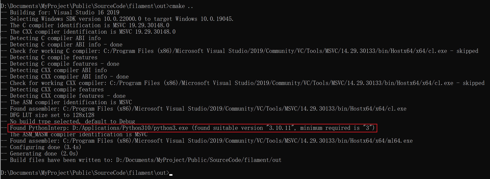

Filament
Filament note.
<!– more –>
Filament
Prepare
获取源码
# 试了几个filament的版本，编译的时候都报错 # 网上有人成功编译了下面版本，试了一下确实可以 git clone -b rc/1.9.10 https://github.com/google/filament.git
编译
按照下面文档描述进行编译：
Windows
## window 编译需要安装下列软件 # Visual Studio 2019 # VS 2019 组件 ### 使用C++ 桌面开发 ### Windows 10 SDK # Python 3.7 # CMake 3.14 or later ## 打开 x64 Native Tools Command Prompt for VS 2019 控制台 mkdir out cd out cmake .. # cmake成功后，在out目录会生成TNT.sln 文件，使用VS2019打开该文件 # 可以右键点选某个工程（如，shadowtest）进行编译，查看该demo。
ERROR
- 生成 Solution 失败
切换到目前的 main 分支，发现可以生成 Solution，但目前版本编译失败
切换到 rc/1.9.10 版本，可以生成 Solusion，但该版本编译失败，错误同上
- Solution 编译失败
最终发现是因为 pyenv 的问题，前一步生成 solution 就不成功。
解决方法如下：
安装 python 3.10.11 到 D:/Applications/Python310 目录下，将该目录下 复制 python.exe 一份改名为 python3.exe。
将 D:/Applications/Python310 添加到 PATH 环境变量中。
将 out 目录下内容全部删除，再执行编译。
得到如下正确结果：

SourceCode
参考资料
- https://github.com/google/filament/blob/main/BUILDING.md
- Google Filament 源码学习（一）：Filament 编译https://blog.csdn.net/jiamada/article/details/113783322